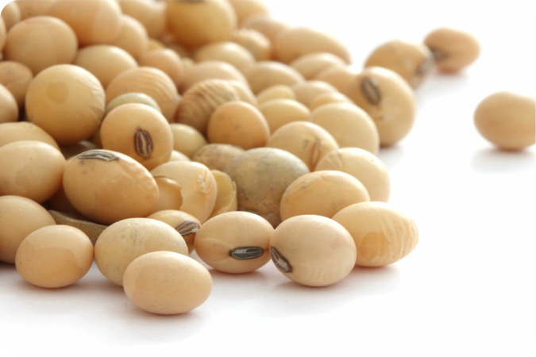
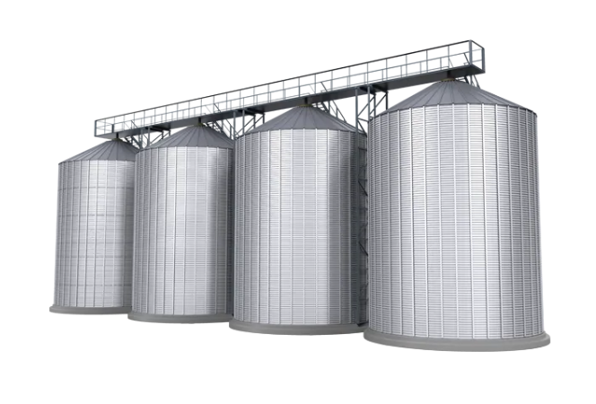
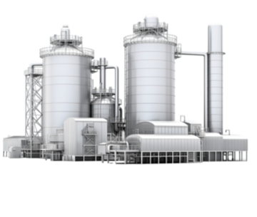
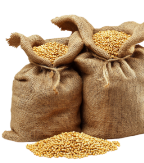

O SILO PODE SER UM ALIADO QUANDO AUTOMATIZADO
É hora de olhar para os silos não como depósitos, mas como parte estratégica da cadeia produtiva.
Tecnologia que transforma a agricultura e preserva o amanhã.
 Planejamento
Planejamento
Receba informações e transforme conhecimento em soluções estratéicas.
 Análise
Análise
Gráficos gerados a partir de dados fornecidos pelos sensores que potencializam análises amplas.
 Dados
Dados
Coleta e armazenamento seguro dos seus dados dentro de um servidor virtual.
 Impacto
Impacto
Coleta e armazenamento seguro dos seus dados dentro de um servidor virtual.


Sem gestão, os números trabalham contra você.
Sem um sistema de monitoramento, produtores enfrentam perdas invisíveis: estoques mal mensurados, compras emergenciais com sobrepreço e decisões baseadas em estimativas imprecisas. A Ceres oferece tecnologia e dados reais para transformar a gestão dos seus silos em vantagem competitiva.

10%
Da produção de grãos se perde durante o armazenamento
+ 9M
De toneladas de grãos são desperdiçadas anualmente durante o armazenamento.

7MIL
Sacas são comprometidas em unidades com capacidade para 100 mil.
Armazenar é mais do que estocar
Perder grãos dentro do próprio silo é um erro evitável. Com tecnologia certa e automação de processos, é possível transformar esse cenário.
Controle total hoje, segurança para a sua safra amanhã.
Estrutura confiável
Grupos de sensores para maior precisão de nível.
Análise periódica
Controle para evitar maiores prejuízos envolvendo o armazenamento.
Dados confiáveis
Para análise é preciso menos achismo e mais segurança nas decisões.
Reduza custos
Identifique problemas antes que eles gerem maiores prejuízos.
Detecção antecipada
Evite os problemas antes mesmo que eles apareçam